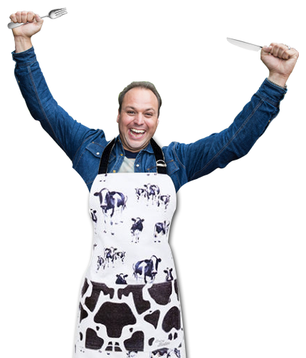

Deel 3: Avondeten
Na een middag te hebben gefantaseerd over wat je zal eten vanavond is het eindelijk tijd. Je komt thuis en ziet dat je moeder andijviestampot met een gehaktbal heeft gemaakt. Lekker! Maar weet je ook hoe lekker veel CO-2 uitstoot een stukje vlees kost?
Ongerelateerde afbeelding van Frans Bauer
